<html><head><title>Surgery</title><style>body{font-family:sans-serif;padding:20px;background:#f4f4f9}.chapter{background:white;padding:20px;margin-bottom:30px}.q{border-bottom:1px solid #ddd;padding:15px}.correct{background:#d4edda}</style></head><body><h1>Surgery</h1><div class='chapter'><h2>Polyps and Colorectal Carcinoma</h2><div class='q'><p><b>Q33:</b>  ˆ   : 60   ”•- -       Œš     -       .           ‰è   .  ‘     .    ,                       -      .                 . ,        ,         .                  .     ’   •.è‰       ‡ˆ°Š.                   ? 154 Answer Key Question No. Correct Option 155 Detailed Explanations   …--      “•       ,  ,          ‰ . Ž                     .   è ,             ,            .                   ? </p><br>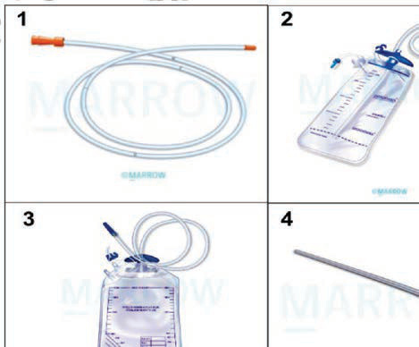<br>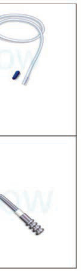<br><br><br><div class='correct'>a) •         </div><div class=''>b) •    </div><div class=''>c)   ’  </div><div class=''>d) “          </div><p><i> -, -‰, -, -„      . Ž           . †      ...</i></p></div><div class='q'><p><b>Q34:</b>  †                 è- -            . †            ‚ Š?   ‹--                   .                  ? </p><br><br><br><div class=''>a) •    </div><div class=''>b)     </div><div class='correct'>c) “      </div><div class=''>d) ‡    </div><p><i> †      “       ‚ Š     “ .    ˜è  ....</i></p></div><div class='q'><p><b>Q35:</b>  †                  : 61                     . ç   ,          .                           ? 574 </p><div class=''>a) Œ          </div><div class=''>b) Œ             </div><div class=''>c) ‘ç‡‘çš          </div><div class='correct'>d)            </div><p><i> †  ‚     ‚  †    ,      '   ‚ - è    ...</i></p></div><div class='q'><p><b>Q36:</b>  ‹                ? Answer Key Question No. Correct Option 62 Detailed Explanations                         ? Answer Key Question No. Correct Option 575 Detailed Explanations </p><br><div class=''>a) ç       ›  </div><div class='correct'>b)    ,        </div><div class=''>c) Œ             </div><div class=''>d) Ž         ‡   </div><p><i> •‚         ‚ ,               ...</i></p></div></div><div class='chapter'><h2>Hernia</h2><div class='q'><p><b>Q32:</b>  †     ‚       : 59                      .           . Å     ,         153      . ç          .                        ?  ƒ                     . 573             „       ? 647 Answer Key Question No. Correct Option 648 Detailed Explanations </p><div class='correct'>a) ê </div><div class=''>b) ‡„ </div><div class=''>c) „  </div><div class=''>d) ˜</div><p><i> †  ‚      ‡ -ç   . „                 ...</i></p></div></div><div class='chapter'><h2>Benign Conditions of Liver</h2><div class='q'><p><b>Q31:</b>  †          .       .                     „.  ’     .                ?                      ? 482 Answer Key Question No. Correct Option 483 Detailed Explanations                           .                  . ‘               .         ?  ‚- -            .             . Ž         ?                ? Answer Key Question No. Correct Option 677 Detailed Explanations </p><br>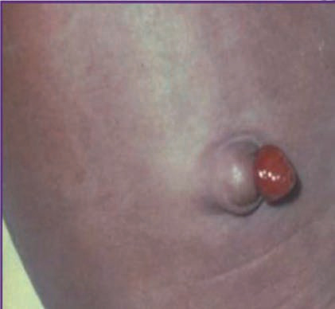<br>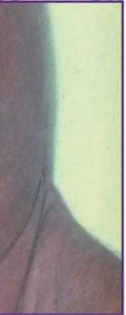<br>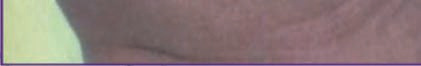<br><div class='correct'>a)   </div><div class=''>b) ê    </div><div class=''>c)   </div><div class=''>d) Å</div><p><i> †  ‘  ”  ,      ,               . „ ...</i></p></div></div><div class='chapter'><h2>Skin Malignancies</h2><div class='q'><p><b>Q1:</b>            ?               :       :          -        ,              .  -       .       ?                          ?                        ?                      ?                            ?                  ?           :          ?             ?                           ?           ,                      ?                     ?   -                       .      ,                          .                     ? c) d)                   ?              .   -       .       ?                          ?   --             / ²             .         .             ?                          ?                '   ?                 ?   --             .         ,  ,          .                     ?             ?                              ?                      ?                     ?            ?                   ______.                     ?   --              .       .         ?                      ?               ?                ?   --                  ,      ,  -           .                     .                ?                       ?                       ?                   ?         ______             ?             ?            ?                .               .          .       ? a) b) c) d)         ,               ?                     ?           - -        ,           ?                      --   .                    ________.                      ?                 ?            ?             ’ ?        -   -       .          ?                                .          ? </p><br><br><br><br><br><br><br><br><br><br><br><br><br><br><br><br><br><br>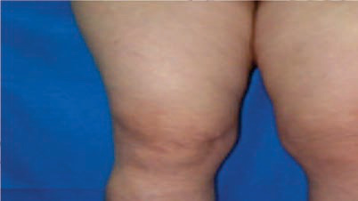<br>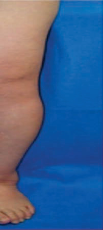<br>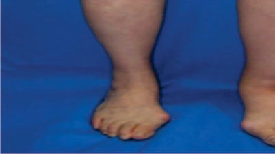<br><br><div class=''>a)        </div><div class='correct'>b)       </div><div class=''>c)    </div><div class=''>d)      </div><p><i> †           ‚    /. ƒ      /    ‚ ...</i></p></div><div class='q'><p><b>Q2:</b>                      ?                    .                        ?                       ? 41                   ?          ,             ?            ,                .                     .              ?                       ?                      .           .               ?                    ?                      .   ,                       . Å           . ‚  ,       . ƒ   „…       ?                           Å      ?   - -                     .      ?          .       , -  ,      . Å‚, ƒ,   „     .           …             .    †            ?                    .                             .                 ?                           .                .        .             .Å.            .                ? 365                           ?       '               .              ? 414                    ?              ?      -    ,                 ______.              '   ?                           ?          Å--     ,             .       . ‚            . 563          ?                 ?                  _______.                                 .      ,        -              .         -.                 ?                    ?                          ?                 ,            '  .                 ?       ’        Å,  Å              :                          ?                  ?                       ?               ?                     .                        .           ?                -       ?                  .    , '      .         .                   ?                        .                 :  - -       ,  ,   . Å - ‚   ,        ƒ .  „    …. / .     ‚ ƒ           ?                     .   - -                      .     /       .             ?       ,        , Å       ,    ‚         .         ________ c) d)                     ?             -  ?     '               .                 ?         Å           . ‚               ? 1109                           .                   ?                     ?                                  .     .                   ?                         ?              -       ,       .               ,   .            ? 1229      ,                 .                         ? </p><div class=''>a)      </div><div class=''>b)      </div><div class='correct'>c) Å     </div><div class=''>d) ‚      </div><p><i> 12                      . ƒ  - ...</i></p></div><div class='q'><p><b>Q3:</b>  ƒ                                       /„   …     …     . ƒ  …          , ‚:  Å--                       .  ‚  ,       ƒ                . „             :  Å          ‚      ‚   .      . 42  101           ’    ______        „…   † („†)          :   ‚ƒ- -         „                   .                  .     …,          †    -      ?  - -        Å   ‚  ƒ         . „       . „                …  .               ?                 ?  Å --           .                        ?             ‚     .   ,           . Å   ‚               . ƒ           ? 239  250 … †Å- -                . ‡ „  ,  ˆ            ‰         . …    ƒ      .      ƒ ƒ         ƒƒ  . Š       ?  275                      .        ,              ?              † _____                     ?  350                         .                              - .             ?                   ? 366  Å ‚ƒ-  -                            „ ….        …      .           †     .                  ?                      _________.          -     .                Å  .             ?  ‚        ,                 …  -    (… -† )?             ,                                 ?   Å--           ‚-        ,    ,      .    ,            ƒ       .      .           „   . …          -     .      „     ?         ,          .                     ?                  . ‚      '   :                      ‚              ?                            ?              „  …  ’  ?              ?  Å‚--                                . ƒƒ         .        ? 702             ?                     ?  767             …               . †             .        .               ?                 ?                 '   ?   --       Å                -‚        . ƒ                 ,   „   .                    ?                -Å     ?   --              .  Å‚               -       ƒ.               ?                         .               ? 868  890                        -  . Å                  .         .          ?  916                   .                    .       Å    ?            ƒ   ?  960 - -                                        . Å         ‚     ƒ.           „.…        .              ?   --   ‚                      .     ,                .        ƒ             .     ‚       „  ƒ    ?   ƒ- -       …†           . ‡ Å ,     .             ? b) c) d)  Å--                 . ‚ƒ                 .               ?  Å                 . Å    ,                 . ‚          ,                .              ? 1058  1082         -            ?   † --                       . ‚                       ?  1129  ‚--     ƒ„                  .               ?   - -      Å‚            ,  ƒ „    .           „.      „   „  „    ?                    ?                   ( )?             ,                        .       ?  1242                         ? </p><br><br><br><br><br><br><br><br><div class=''>a) ƒ  „</div><div class=''>b) …, † & ; ‡</div><div class=''>c) „, … & ; ˆ</div><div class='correct'>d) „, ˆ, † & ; ‡</div><p><i> ƒ …               . ç,          ...</i></p></div><div class='q'><p><b>Q4:</b>              ? 5  ‰       ,  ‡--          .  ‚  ,            .     ,    25    .          ?                      ?          ƒ   ?     ˆ †… † („ ††)             ? 130  145             „   ?  Å        ‡,                    .            ? 181  ‚          _______. 204               ’           ‚ ƒ    ? 219     -            ‡                  .  ,              ˆ    . ƒ              ?      ƒ ƒ                      ?                  Å‚ƒ.  „              .              .                     ? 301                     ? 328  ‰  ‚   Š                   .          Š                   ?  ˆ                     ?  Å ˆ‰-  -                †              Š  .    †    † , †  394        ‹.                ?               .               ? 415            Å                 ƒ  ’    .         442       ?   Š--        ˆ / ²             .     ,         457 -  , - ,   -   ,   . …  - ,      -    .    ‹   ?  Å --                              . ƒ             472                .                 ?  508  ˆ‰--                     . Š             . Š          -       .    ‹-         .           ?               ,                           .                 Å? 539   Š--                      .       ,   ,              ?  …         '           †        ? 594  ƒ Å --           „…            .    ,                     .              .       614  ?                              ˆ        .            „    ? 638        (ƒ„…)         („…)    ,       ,   . „      667     („…†)         ?                   „„ -       ƒ   …    ?   Å--              . ‚                   -   ƒ           .                  ? 715  ‚ƒ--                           .                             ? 732                              .  ,               .   ‰   ,     ‰           .    ‰   ?  - -                    .          -           Å‚  . ƒ                      .                      .       ? 783  †               ______. 798   †‡--            ‚             ‚ . ˆ       . ‰- ‚    809      .          ƒ     .             ‚      ?                               ‚ ƒ„….                 ? 828  849  …†--                   ‡ ˆ. ‰    ,              ,        ,        . „      .     Š           ?                   .             .           .           ?                      .            ? 891  …  Å   ,                  Å  Å -.   ,                .                       .           .       Å    ?                  ? 941                        ‚    . Å                 .  ˆ   ,            ,              .       ‚?  981  ‚  ‚   ‚     .     -      ,  ‚ -   - ‚’     ‚  .     ‚            ?             ,           .         ,       ? 1003  1026 ‡ --        ˆ              .            ˆ     ?                         ?                         ?              ____    ‹   ’     ?   † - -       ƒ                  „   ƒ „  ƒ „   † .      „  ƒ  „ ? 1162         ? 1184                ,                 Å .        ? 1204   ƒ-  -                            . „       . … † , ‡Å,        .              ?                      ? </p><br><br><br><br><br><br><br>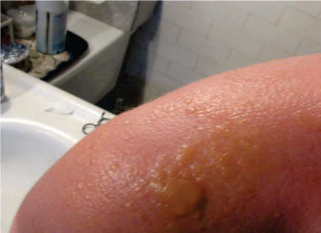<br><br>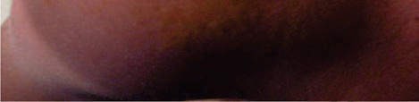<br><div class=''>a)            </div><div class=''>b)                 </div><div class='correct'>c)   '               </div><div class=''>d) ‰     -  </div><p><i> †              ‚     . •        ‚     ...</i></p></div><div class='q'><p><b>Q5:</b>  ƒ  …   …       …       . ƒ      … ,     ˆˆ      ˆˆ    … .   …     ?  Å--           ƒ           .  ‚  ,           Š†/‹†  .               ‚?       : 43            …   ?   - -            ˆ       -    Š       .       ‹Œ††    Š Š  … .              ?   ‚è- -         „         .                 ?                   ?                             . Š                           .        ?                      .  ‰         Š‹, Œ‹  ,                ‚? 240  …             ˆ Å Å         .    „             ?         , ‡ˆ ,                       ‰    Š .    ‡      ? 276               -    ?                 ?             -        . ç      -  Ž ,      . „…†           .    Ž  ?                                       ,  ,         . ƒ                               .            ?  Å ‚ç-  -                  ‹ †   † . ‡    ,      .              †††.     ‹        ?        ‰Š                 ?                  Å              ?           ?  Å                    .                  ?  Ž                   .          è  „                   ?   ƒ„ƒ              ‚ … '         ,        Å  ,      .              ?   ˆ‰--               .         ,     . ç      ,            ˆ-‰  -  .        ? 564              ‚                ?  ƒ                      .   ,                     .                 .          ?                ?                  ?  †--         …      ,  ,               .             ‡-. ƒƒ                .                ? 703   †‡--               ,  ,       ˆ   . ‰                         .             ?  …†--                      .             .           ? 733  Š            Å       ,              .     ‰      ?                ,  - -                  .                 ņ,‡‡‡/µ.             ?  ‰ Š-  -                     ,  ,               . ƒ           .                   ‹         ?             ?  †              :                     ?             -      . ƒ                  .         .               ? 869         ‚             . †       „     . ‡          ,          .                ?                  † . ‡    ,          . ‡   ˆ  ’ ,      .          ‰-    .                ? 917                   ƒ      ?  ‰ - -       ‡          . Å       ,                     .                   .     ˆ             ?             ?   Š- -                         .      ,  ,   ‚                                     Å   .     . a) d)  - -         Š„      ,  ,         . Š  ,         .             ? 1027  Å                       .      † ' ‡    ,              ? 1059          -     ,           ?   Œ--                  -        . ƒ  ,                ,                             . ‚          ?   ‚--       -                     . „ †  ,   - ‰ , Å - Œ/‚ ç , ‹‹ - Ž/ .                     ?  ˆ       ‰   Š _____   --                                     . „  …  ,        . „    ,    .             ?  … †‡--                Å       .                         .          ? 1205                             ? 1230   ‡‡- -        -                ‡  . Š        ,     . ƒ   , … „            .        .                 ? </p><br><br><br>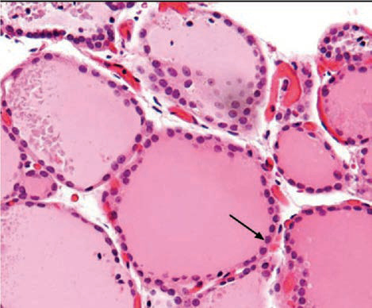<br>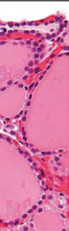<br><br><br><br><br><br><br><br><br><br>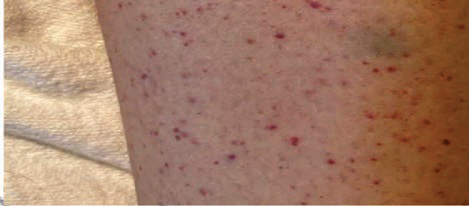<br><br><br><br><br><br><br><div class=''>a) ƒ  ˆ</div><div class=''>b) ˆ & ; ‡</div><div class='correct'>c) … & ; ‡</div><div class=''>d) „, ˆ & ; †</div><p><i> ”                ˆˆ    ˆˆ   . †      ...</i></p></div><div class='q'><p><b>Q6:</b>  ƒ  … '     „     . Š           . ‡  …   …     ?  Œ   ‚       ?        ‚      : 44   ‰--            .  -          .    Š      ? 102  ƒ     …   Š           .           ?   ‡è- -              „      . Å     ,       „                   .                   ?          ˆ      _____.          ?  Å ‡--                              -‚   . ˆ  ,              ‚      .                      ?                        .               . Å      Š‹, Œ‹  犋/  ‚ . ƒ                  ?  Ž             .                          ? 251  ‹                  .          ?   Š- -     ƒ          . ‚       ‹     … .    †       ? 302  ‚                ƒ               ,       .                     ?       ’         .               ? 351                    ?             ’ '    ?             ‰Š  ?    ,          -Å                -   . ˆ      ,      Å    . ‰ Å                  .    ’       Å  ?            ?  Å --                             .                 .            .                 ? 473   ’’--        ç                        . Š          .                         ? 509                    ?  ç      ˆ‹--           . ‘                            . ’       Ž‚    .               ? 565  ‡ ‚       --              -         .                       ƒ .       ,    ‚  ,  ‹               . ‰       ? 595                ˆ       ? 615        „       ?         -       , Å_____  ‹†--                     †  . ‰             ‚ .             .              ? 704                     ?           -ˆ?                  ? 768                   . ‰     Š‚‡‡‡      .                  ? 784  ‰ -  -             ç  ‹‹        Ž  . è       Š %,        . ‡†      -   ê         . †        _______.          ‚              .          ‚        ?   ˆ--                       .              ‰   Š        .                  ‹ : 829                      ?                      .              ? 870   „                         ? 892                                   Œç   .                 .              -      .      Žè-ˆ ˆ      ,            ‹.            ? 918                         ƒ      ?         „ç- -                  .     ƒ-,   †ŠŽ        .   961   ƒ    ?   Š--      ‚         . ‰ ƒ      ‚              .       ‚  ‚      . ‡     .           ?                 Œ      ?              ?   Š        ,                  .       ? 1060       ‰          . Š                 .                   ? 1083  ‚                  -  ? 1110   ‚Š--                  . ç           è-   .                 ? 1130          ,     ƒ-      Š (ŒÅ) ƒ  ?   Å--     ,          ,                Å    ‚ƒ.                ? 1185  ‰       -                 .                           ?                  ‚ ,          ?   ‹‡-                         † . Œ              ç      ‡  . ƒ   ,          .          ? 1243 </p><br>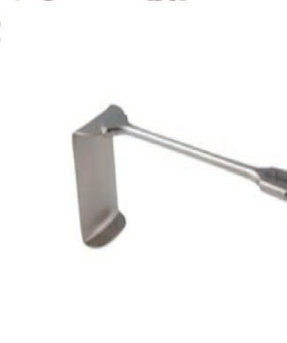<br><br><br><br>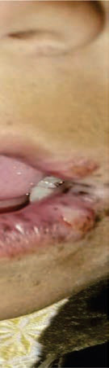<br>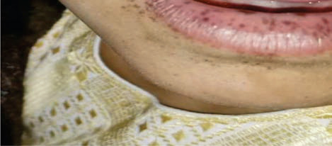<br>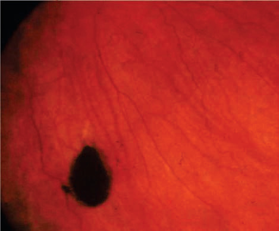<br>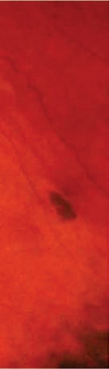<br><br><br>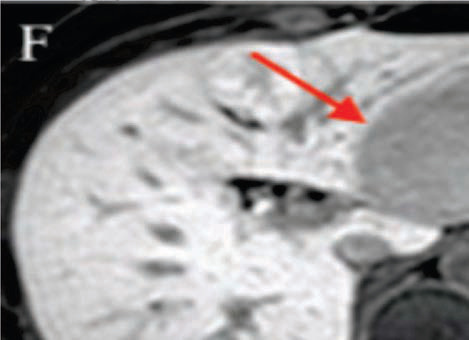<br>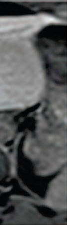<br><br><br><br><br><br><br>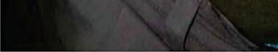<br><br><br><br>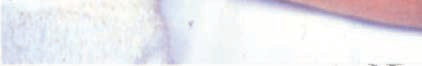<br>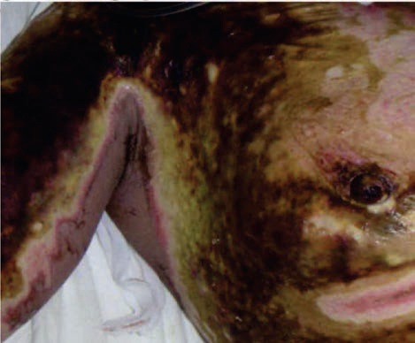<br>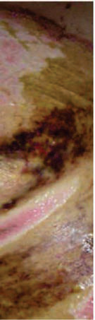<br><br><div class=''>a)     </div><div class=''>b)  ’  </div><div class='correct'>c) Ž   </div><div class=''>d)    </div><p><i> ç         . †                  . • …...</i></p></div><div class='q'><p><b>Q7:</b>  ƒ ŽŽ- -    …          Åè‹. ê …          …   „ .      …    …          ‘ Š†?  „             ____________  ‹                    ‚                    ? a) b) c) d)  ƒ-Œ           ?   Å - -     Š  Š             Š    Š . ê   ,  …   ,    Š       .         Š         ˆ   Š       ?   ‡’- -                  „    . Å     ,                   “       . Š           .         ? 146                   ’   ?  205             ?  Å       --               †…Å„   .      ?  Å       , êÅ‘ç               Åç’      ç -/ ?  ‚                 ƒƒ             ?   - -                     .              ? 277               …         †:       ,                     ƒ    ,           .                     .                        ?  ê                   Ž   Œ- -             . ƒ  -        ,   ,  -             .      367 ■         ,              ?  ê      (Œ‰”  )                      ‹    ? 395   ‡ˆ--       Å-     Œ„ .       ,           ‰Š  .                         ‰Š  ?                 ‹ Å     Œ    ç.    ç     ,           ? 443    ,            ?  Å --                  . Å  -            .              -             .          ?            -    ?                  , ,   . ‡   ,                    .       ?                     ‘Ž :                            ?  ƒ ʼn--                     .        Š              ‚ . ‹         . ƒ -            . Œ        ?  Å-„-         „             ç   . ƒ   ,               .               „              ?                          .              ?                             ?   …--            -                  .                  ?      çŽ          ,         è.            ?                   ?  ‹         ,             ?  ‰                         '   .                     ? 799           ‚ „           „ :                        :               ? 850          †‡                .              ?                                 .                 .               ?  ‘   Å    ˆ  ’                .                      .            ?  è                 : 942                        ˆ      .             . 962      ‚    ‚                   .            ? 982   Ž- -       …†          ç    .               .   Œ        .      ? 1004                ç  ç/Ž . Š  ,               .        ? 1028  Å                      .             ?            -              ?           … ’      .                  __________________.   ‰--       /            . ‘ †  ,      ’       . ç        .   è-     -   †  .‚ . ç       .         †           ?   ê†- -   ƒ            „        .      „    Š     „     ?             ?  …               , Å?                    ?              -             . Œ          … -     ç      „è          . Š           .             ,   ______. 1244 </p><br><br><br>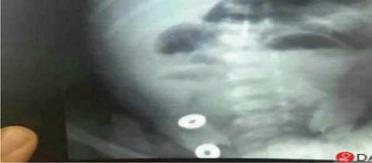<br>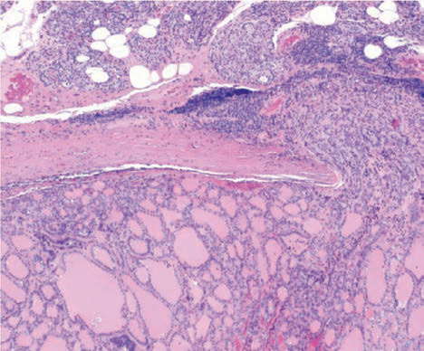<br><br><br>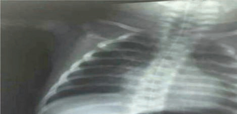<br>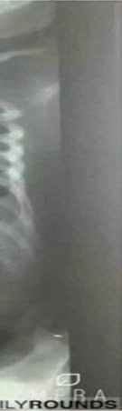<br>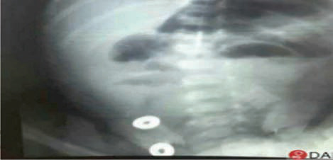<br>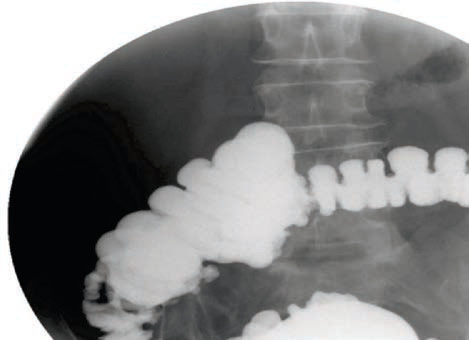<br><br>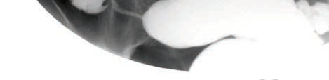<br><br><br><br><br>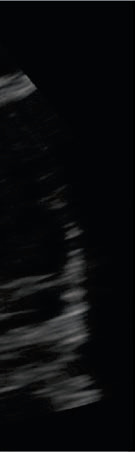<br>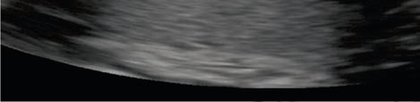<br><br>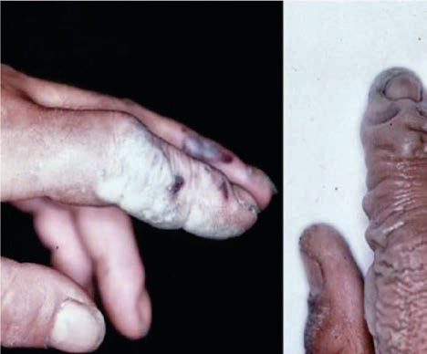<br>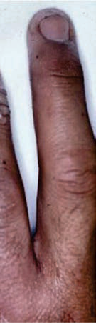<br>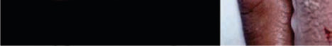<br><br><br><br><br>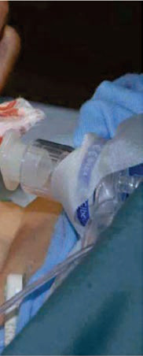<br><br>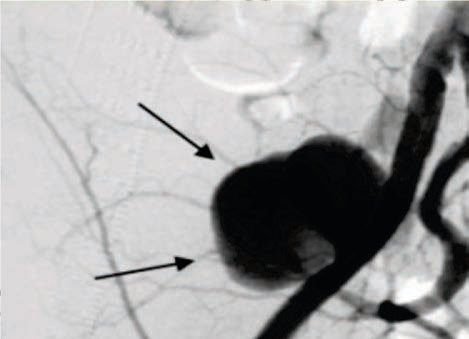<br>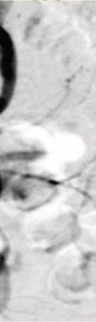<br><br><br>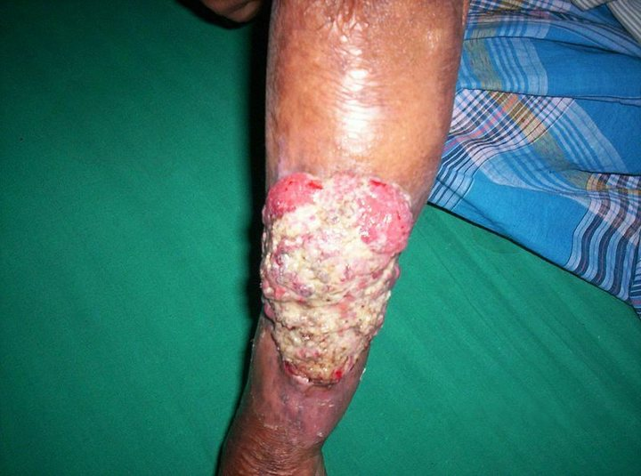<br><div class=''>a) ê   </div><div class='correct'>b) Œ  </div><div class=''>c) ‘    </div><div class=''>d) ‰ -        </div><p><i> ƒ           ‘ Š†. ‘        Š  † (‘ Š†)    -  ...</i></p></div><div class='q'><p><b>Q8:</b>  6                       ‡ '  ?  26       -        -              .  ‚  ,            .      …ê/ .                 ?  „     ,   ‚              .      : 45                    ç   .          ‰    .              .              ? 103  131     Š              .      Š .   ˆ     … ,           †.           Š …  ’   ?  ‘                ?  ‚ - -                           .           .         ‡   ? 182                     ?  220 Å ‡--                         †…Å„ ç.       ‚          ?  ƒ             ‰ ,               ?                ƒ                    ?                   . Œê          .           ‡          ?                                   èç     .           ? 303  329          ,   ,          .    ç-   ƒ    ,     .                    ?   ’“--                   ’       ‚         , - .        ?   Žè- -      -                  ê   .                    .                        ?         †      ?   †ˆ--      ,        Å           ,     . Œ   ,                 .        Å  ? 416           ˆ†Ž       ,   ,  Å          è  .        ,             .         Å        :  458  Š--          ‘ / ²          (ç ‰). …     ,     ,  ,      .    ‹      ?  Å                          ‹Œ '        . ƒ ,   ,   ˆ       . ç ˆ     ,         .                 ? 474   ”‰--                 ƒ            . Ž    -               „      . Š ,  -           .                  ? 510  540 ˆ                 .      ,           -     .            ?                 ’ '   ?                    ?             ? 616    „               .          ? 639  668                   †   . †         .          ?  ‡ ꉑ   ‹ç--        ,     .        .                      ?  716                -  ?  ‚†--               . ‘Å          .                 :  ‡                  ?               ?              „’ ê  ?  810                  ?                                ?             ?     †- -       Š‰‚            . Š   ,  -        . ‹Œ ç                -      .                 ?                    . †             .               -            .           ? 893        ˆ  ’ ,            Å ‘’? 919   -     ,    ƒƒ        ‰Š† . Š       Œ   ‚   ?                        ?             ‚      .     ,          ’   ƒ.      „    ’  ?                     .         .            ,     .   Œ        .       ? 1005  ‡--                    Ž . Š  ,                .              ?  è%      '                    .           ? 1061    - -                       . Œ     ,     ,            .           ?                   è--     ‹    .      . 1111            †    :  1163      „   „  „   „         ?   èÅ--                      .    ‰  . ˆŠ           ,             .                ?  …        ,    ‹    .               Š…‚(   -  - -           )?   ç-  -                      ‚     .                ? 1231   ’‡- -             . Œ          . Š        </p><br><br><br><br><br><br><br><br>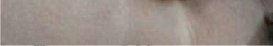<br><br><br><br><br><div class=''>a)     </div><div class=''>b)  ç ’ </div><div class='correct'>c) ““</div><div class=''>d) ‘ </div><p><i> †                   ‡ '   (‡†)   … ...</i></p></div><div class='q'><p><b>Q9:</b>  ƒ    …             . ƒ  …         , ‚:  ê‡--                   ,  ,   .  ‚  ,           .                    ?     ‚   . 46   è- -                   .        Š      ,      .              ?         Š   “   …    †  “?   ‡è- -              -        .        ”‚ˆ  /  ê  •’/ƒ‰      ,  ‰ˆ/ƒè     .     -                .                    ?                        -   ?   „ç--                      ‡ . † Ž ,        ,             .       ? 206  Å  ‚  --                    . ‰      ,         †…Å„ .    ƒ        ?          ‰        ,            . ƒ                    ? 241  … ŒÅ- -                   . …            .         ƒ ?                  ¹²³         ‘ “.     -    ?            .  Åê              . ‘        .               ‚  . ç  -   ‹        .            ?                ,           ?         çè       -       ‚ .               ’     .                    ?                            -        ? 368            …   ‹            ?   ƒˆ--         Œ„                    . ‘     „„Š         . ’             .        Å  ?              ˆ†Ž     ,  ,    .          .               ‰ê„       ?             †‹--è      ?            ‹ ’  ?                          ,             .    Š '  ?                           . ‡   ,            Š‹Œ / .  ƒ        .               ? 541                        ?                          ?  ƒ --             ,  -   ,         .    ,            .           ?  è     „  _________.               ê-  ?  ‰          ______.  Š                 ?  734                    ,                ( çç)     ?               ?                             .                ?  ‰                          . ‰                    _______.         ‚               ' , „ :              ‹           ‹ :                          ?                    . ‹Œ   -     . Š     - ,                     .  ‹Œ           ê     .           ? 871             Ž è ?                            ?              -‰Š†.          ƒ       ? 943       ƒ                            … .  ˆ   ,        .             ƒ-    . ’              , ˆ  : 963           ‚   ‚     . ‹   ƒ  ,       ‚    ƒ   . Œ ‚ .           ?   ‹ - -      ,   ,          Ž  .             ˆ ç  . ‡   ,              .          ?  Œ -‹‹                        .              ? 1029  Åêç        Š     : ‘.’, Œ“: ” , Œ“: •.,        /–. Å         ,                 ?  ˆ         : 1084 d)            ? 1112                      . „ †  ,      -                  . ç     , ‹‹ - ‰‚/ , Å - Œ/Š‚ç ,   ”•Å    .         ?      „ „       „  ƒ  „  .        „        ?                      è . „   ,             . Ž     1186    ?  1206 … ‹Œ--                 .          Ž        .        .             ?                      ? 1245 </p><br><br><br><br><br><br><br>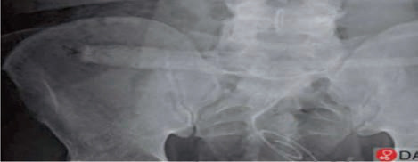<br><br><br>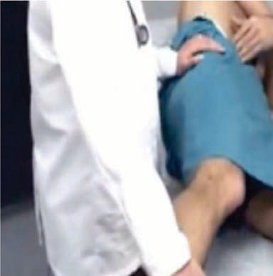<br><br><br><br><br><br>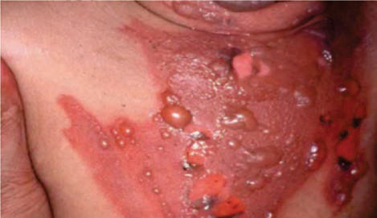<br><br>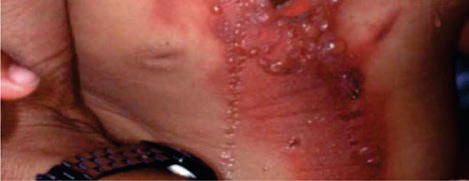<br><br><br><br><br>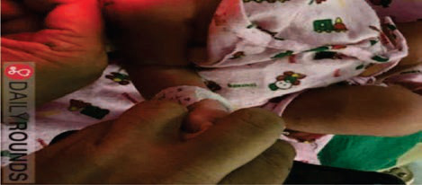<br><div class='correct'>a) ‘     </div><div class=''>b) ê      </div><div class=''>c)       </div><div class=''>d) ƒ           </div><p><i> ƒ            (èç )            . †  ...</i></p></div><div class='q'><p><b>Q10:</b>  ƒ       …           .   …       „      ?  “                   Ž ,    ,   ”   ,            .                      ?  ‹     Š    ‚               ? b) c) d)        Š           .              ? 104          Š     Š          †    .         Š   …     ?                   . Å     ,            ,                .       ?     ‡                           .            ,           .          ‡   ? 183                               …  . † Ž ,           .           ?  Å çŽ--             ˆŒ„  ê ƒ               ê . ˆ ‚   ,      ‚ ê             .                              ?  ƒ               ?            „     .          ‘…’  _____. 252                .              .     ? 278   ƒ - -                       . Ž †   ,    ƒ   ‹,     ….   ,       .  …        … .                      -        ?   ‘‘- -                                       .                    ? 330  352       .              ?  ˆ                    ?             †  Ž '  ?                  Š …?    ‰’                ?   ’--                        ’ .          ‹       Š%  . “  ”-       .                ? 459                      -    ‹ '  ? 475   —Å--            ,   ,                     .              ˜            .              ?   ç--                            Œ  . ‡   ,      .                .                    ?   ‰–--                    †         -   è.      ƒ•      . ‚                   566        .        ?                  ? 596                   ?                   ?  ‹ˆ--                           ˆ   . „          ’ “              ˆ /”          ‡.‰ /”.               ? 669                  ? 705                         ?  …†--              ,               ,               ‚  . „   ,            ˆ      . –         .                   ?   ’“--          ,      ,       . ‚           .           ? 769                 ? 785  ‰ Å -  -                           . •          . –     ,                              ÅŠŠŠ /.           ç        ?              :   --                                 -           . Š           Œ      .        Œ   ? 830                   ?                  ?                      ?   ”’-  -                        Å .                      .                 Å   ?  … - -      ƒ        ‰Š†.  ,                ƒ   .      ƒ ƒ   ?            ?   ê‘--       ‚   ,    ,         ‚   . Œ   ‚        .     ‚          ? 983   Š - -                .                ç . ‡ Å ,   - , ê‘ - „ /   ,  ç ç               .        ç      ? 1006        Å                   ____ .                  ?         ‹     ƒ '  . ‚          ?   ŽŠ--                                 . ç    . „ †  ,    1131                 .           .                  ?      „        ?                     ?  …            . è Å  ,  ê        . …   Š…‚     , ƒ                   .        ‚ ‚            .          ? 1232  ‰                            ? </p><br><br><br><br>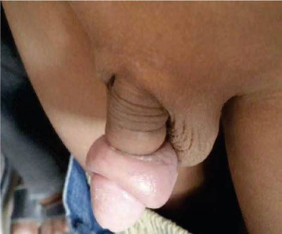<br><br><br><br><br><br><br><br><div class=''>a)       </div><div class=''>b)        </div><div class=''>c)      </div><div class='correct'>d)        </div><p><i> †      „       …        . ‘    ...</i></p></div><div class='q'><p><b>Q11:</b>         „      †è”?                   .                         ? 27  †            : 47   ‘’- -             .              ? 105     …   …      Š     ‘. ‰              Š     …    Š       ? 132  147  ‡è- -                             . Å     ,           . Š               .              ?                          ?    -              .           . ˆè-                        . ‚             .        ? 207  Å ‘’                            ? 221  ƒ                           ?                  ?   -        ,  ,       .                       . …       ‰   ”ç  莎 / .               ?  304        …   …    ?                             “      .           ?   •--            -     Ž                 .    Ž               ?                         ‘    . ˆ                       . ƒ               -           (&;”è  ƒ).            ?  è ‹          Ž '    396              ?  444                         .                    ?                 ‹                        .           ?                    ‹ ’  ?   ’’--                      .            ƒ   ˆ              .   ‹-              . ™     . ‡         -        . Š        ? 511              ,     ‘             ? 542  ‚       Š--                          . ç        .                      ?                   ?                  ?                   „.      ˆ „             ?          .          ?                  ?   Ž--         è        .      -          ……%        .                          ?                ˆ   ,     . „   ,           ˆ .          .                 ? 735        :                           ?  ‰           —   -„           . †          -        . †            ______. 800     ‚     :                        , ‹ :   …†--                – ,   ,      .  ,             ”     . —      .                 ? 851                           ?                  Š   . †              . ê                   .                         ?  920               ?          Ž    ‚   ‚        .   Œ   ƒ     ‰Š†   .              ?                  , ˆ  :   Š--    ‚     ‚    ‚   . Œ ‚                   .              „    ? 984                   ?                            ç . Š  ,                      . …           .            ˆ  ? 1030  Å - -                      .                      ? 1062                  ,             .                     : 1085         ç                   . ‚               :      ? 1113             ,  ,      . „ †  ,                  .    è-      . ‘“-         .                . ç        ?   †’- -             „ „ „   .                .      „      „  „    ? 1164           -                .            - -  ˆ‚    . „ …  ,                    .              ? 1187             ‘  -    ? 1207                  ‚       ()?                                  …  . Œ              …  . ƒ   , ˆ „       -      .     .                        ? </p><br><br><br><br><br><br><br><br>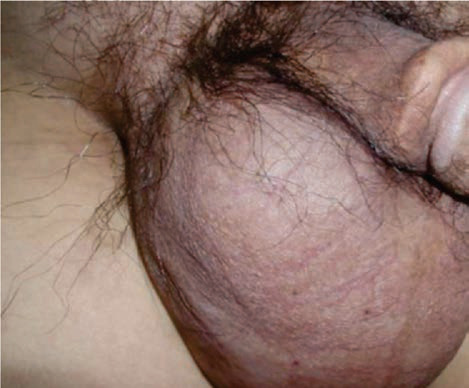<br>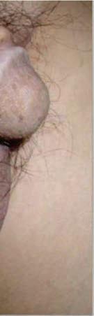<br>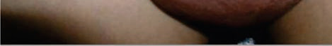<br><br><br><div class=''>a) Ž   </div><div class=''>b) ê   </div><div class='correct'>c) ‘    </div><div class=''>d) ”   </div><p><i> •                 . †            ...</i></p></div><div class='q'><p><b>Q12:</b>  7 ƒ          (èç ) …               . • …    ,   –-  … „, …     …      ….   …           ?  --           ‡      ”           .  ‡       ,        ‚     êê%.   —-      . „            ?                        . Å    ‚    ’       . ‹          ? 48      Š              _______.                  …     ?   ˆè- -       Œ       . Å     , —Š  ”ƒ/”ƒ,     = ””è/ , ê = ˜è/‰è  ,      ™“.                    .       . ê                   .     .       :        ,       -            : 184                          ?            ‘’          ?   • „                  :  …        ,            ƒ              .   ƒ       ______. 253   ‰- -  ,       ,           .        ˆ   ‰,   Š,    Š-ç  .                   .    -       .    ‡    ?           …  ?                 :  ”                    ?                          .                          ? 369      †        ‹ -              “  .            ?                   ? 417     ”           ,          ’  ?                      ?              --  ,   ‹ ’            .       ?                         ,    ƒ    ,           . Š        ˆ          .      „     ?                              ?   ‹--                   .               .            –--  ? 567  ‡       -             .               ?               ? 617  Å‘-„-              ,        . …                     ' .   640             ?  ‰ --                    .    . 670  †•--                            . ƒƒ        .          ? 706  717              ê‚‘ ?                  . ‘Å    ,                      .                 ?   è”--         …    . ‹•  ‚           .            . ˆ               .  è   -               ______.                               ?  811                    ‚      Œ          . è        ‚         ‚ ‚   . ˆ ‚           ‚ .           ?                        ?                             ?                 †  . ƒ          -        . ”- ç        .                   ? 872  ’                    . ê               Œ.Œ          . …       .               ? 894                .  Å   ‚   ,                      ?  •- -       ‹    ,                   .               .     ˆ             ? 964      ‚             ?   Ž- -             ,   ,           -        . Œ Œ    .   , “†è        ,                 ,    .      ç   ?                        ?  Å                  -    .                    ?                      -            .               ? 1086                   è--     .   -   ,                . ‚             ?                          —? 1132       „   „                     .              .                .         Š  ?   ‹Å--                        .           ‹ .  ˆŠ     .              ?  …          ,      .                    ?                         ? 1233 Answer Key Question No. Correct Option Detailed Explanations      ““,                         ? </p><br><br><br><br><br><br><br><br><br><br><br><br><br><br><br><br><br><br><div class=''>a) ƒ  …</div><div class='correct'>b) „, † & ; ‡</div><div class=''>c) …, ˆ, & ; ‡</div><div class=''>d) „, … & ; ˆ</div><p><i> †                 (èç ) ,       . è ...</i></p></div><div class='q'><p><b>Q13:</b>  —   „                       .        ?  ‹†--         ‚                        .                            ?  „    -    ,        ‚             . ‹         ?                 _______.               … ?   ‚è- -         Œ               .            ?                       .   Š               .     .      ‡  ?           -           .               .        ?  Å                      .           ç   ƒ.                        ?   - -                       . — .                . ’             . ‘                  ‚ 242 猊   ‰’Å‘      -     -     . ƒ         ? Answer Key Question No. Correct Option Detailed Explanations  …             .            ƒƒ          .         ?                Š     ‰ ? 279   „ - -          Ž‡’       . ‚           .          ‚   ’      “    . Ž  ,    …  ƒ   ‹, -  ,  , †,             …    . Å‚     .            .       ?   “’- -                            .                   .  •Å‡         .            ? 331   ’--            . ç    ,         . ê    —•/˜•   ,       .       ? 353   Å- -                                  ê   . ‹                        .            ? 370  Å ç”-  -                  . ê         ,  Š  ƒ  † ‹     “  . Å         ,        †   ?                     .           . Š                    .                 .                         ?                 ?      ,           -,   ‹ ’  .       ?   ™         ”--               .   '              .                 ?                    Å. ‡   ,                 .   -          . ƒ…ƒ     .         ?                 ?                   ?  ƒ Å‘--                                ‚ .    ,          '         .      ,         '         .                  ?  -„-  „            „                      .               ,        -        . Ž           „.                   ?                     Å.     --…  ,                ?                          ƒƒ     ? Answer Key Question No. Correct Option Detailed Explanations                                   ?  ‚†--                      . Å                 . ç                       ? 736              ?                -          ?                 -          ?                   -   ˆ         ?                       .   ‹                    .                   •     ?                     :                        ?                è            ?                  -          Ž?  –-  -               . •†‹                . „     ƒ  /  ƒ            .             944      ?                  Œ ’   ?     ‚       ’   .     ‚        ?        ‡    ,                         ? b) c) d)    ç            ,     ˆ         ˆ.              ‘   :                  ,                      , Š  : 1063                 ƒ      - .                   ?  ‚             .                           †:   “ç- -      …       „   .   - ,                   „.         .         „ ?   ‹--                .                  . Š          .  ˆ“ˆŠ          .            ? 1188                           Å    ?                    •     ? 1246 </p><br><br><br><br><br><br><br><br><br><br><br><br><br><br><br><br><br><br><br><div class=''>a)   </div><div class=''>b)   </div><div class='correct'>c) ƒ </div><div class=''>d)        </div><p><i> †                      ,       ...</i></p></div><div class='q'><p><b>Q14:</b>  ƒ                      …„. ƒ  …     , ‚: 8         ________  ‹               ? 49                 ________.          „  Š    Œ„     .  •      ,      ,           .     † .               .         ? 148                                   ?                          Ž     .            . ‹                 .                  ?  Å --          †… Åê        ˆŒ„        .           ‚           ?  …                   ,          Œ   . Š         ƒ                 -     . ‡ „  ,         .          ? 254   Ž- -              ,       ,               . ‚  ‡     , “ ”      ‡       .                  ?   „ - -                   . ‘…        ƒ, „,   Å‚         -‡Ž  … .             …        .                   ? 305                        ?               Ž   - -                Œ   .                    .            ?  Å                 †     . Å †               .                  ? 397               ‚           ? 418           Å          Å     ‹  . ‚              ‰  .            Ž‹‹–  Ž ‘.           ? 445  460          (  ),    -      ? Answer Key Question No. Correct Option Detailed Explanations          ‰         ? 476         , ,      .                     ƒ      .          .              . 512                      . 543        -            ƒƒ•  ? 568          ,                         ? 597  ƒ                      .    ,            ‰’     . ƒ  “  '                          ? 618                      „?               Ž”è ?            Œ‰-‹‘”  ?                           , :  ˆ              ™  ? 770 Answer Key Question No. Correct Option Detailed Explanations  ‚’- -                . ‰             . Ž  ,  ˆ  ҇/“’  ‰               Ň   ÅÅ  . ‰                           ” .      : 786  ‰ Š-  -         –Œ   ç         . †                       .       -                       .      ç  ? 801              -   ˆ     ‚  . ˆ                  .   ‚  ˆ   „    ? 812                    : 831              -             ?             -     .   ”-   ,    ‹Œ         …    .                    ?                         ˆ  . †            . ‘                      .                       ?                            .                     ?  - -           Å•   ,     ,      . Å    ‚   ,                . ‰           . ƒ      .    ƒ    ƒ ƒ  ?  Å ƒ- ƒ ‹                ?   ”--       ‚     ‚ .     ,             ‚     ‚        ,   ‚     ‚.       ? 985             ç       .           Å    Å    ? 1007                        , , ,  .                    ?  Å                     .                      ?  ‘                     .              ? 1087   †Œ--          -                         .           : 1114   Ž‚--                      . ç              .          -       .             .               ? 1133  1165                   „ Å‚  „ „      „.      „   „  „    ?              -     ?  …  Å                .                      .       ?  “ Å     : </p><br><br><br><br><br><br><br><br><div class='correct'>a)      </div><div class=''>b) ““</div><div class=''>c) ““</div><div class=''>d)    </div><p><i> ƒ                      „. ç   ...</i></p></div><div class='q'><p><b>Q15:</b>  ƒ                   _______  28 ‡‡--                      . ˜  ,              Š†/‹ˆ         …Š   .         ˆ     Ž .              ‚:            •‘    …           . – “ ,            ‚     . †           :          ‰”        “†‹           . Å              .   ç   ,              .              .       106    ?                   …   .       …Š     …   Š    .     †. 133       Šš      _____.  …‘- -                  ’  .   ,       … …   ˆ,  ,            . “                  .                  ?  208                        .              ?  222 Å          “…‰      ,      ‚ ç             . ˆ ‚   ,   ’           ‚       .                         ?  ‚                 . 255                   :   ” - -                      . Å                               .       ?   “‘- -                †              . …                  .                     ” _____ 332   --               , ,             .           ‚       -   .                ?   è- -     ”-                     .                           .          .                ? 371     †                     ?                                         ?                 '  ?  Å –--                           . Å     -        .           ?                              .        ,     ,      -   . Š ‹-          .                  ? 513                   . —         ‚    .         ?                     —Ž‚‚?               -            ?  ƒ      ’ '                               .                   . ’                 -       . Œ        ?               „                .           ˆ „  ? 641  ‹Š--                Å       . ‘      ,    ,  ,  ,      –   . ê                       .            ?   ÅŽ--              ,     •    .                   ? 718                             :                      ?  ‰ ™-  -                  - ,        .   ç                  ç. ‡†               .         ?        •           ?                                 .           .  èê‚    -            .                ?   †--            .            ,      .                ? 852                            .        ? 873                              ?  921                        ?  ……- -              .  „      /    ƒ      .                 ?                       ?   ””--   ‚              .      ,          .    ,   ‚    ‚ .         ? 986                               ?                  .          ˆ   ’     ? 1031   Š    ,         .         ? 1064                    ?   †è--                        .                       ?      …                   ?   †ç- -,           „      „  „     .      „      „  „    ? 1166   ‰              -           .                    …   ‰  ? 1189  1208 ‚                          ?                          .              “ Å                    ? </p><br><br><br><br><br><br><br><br><br><br><br><br><br><br><br><br><br><br><br><br><br><br><div class=''>a)    </div><div class=''>b) Å</div><div class=''>c) –    </div><div class='correct'>d)  &; ’ </div><p><i> ƒ            (†è”)        š,    . †    ...</i></p></div><div class='q'><p><b>Q16:</b>    …    ?                       .  ‚  ,                         ƒ . …     Ž          .            ?   - -                 …           …         . ‹                       ?   ç- -       ˆ     .  Š ,              . Ž                 .              ?           Š      ?   ˆè-                 „    . Å     ,                .                .                 ?            _____ 185   ƒ‡--          . Š                 ƒç   ƒ…     .   …   .     ,       -    .               Ž              ? Answer Key Question No. Correct Option 209 Detailed Explanations  Å      ,                                ?                            ?                    ?   ƒ„- -     …                 . Ž †   ,                …     ‰  . ‚               .       ? 306   ‹ê- -                         .        ,         ˜ ,                   ______.              ? Answer Key Question No. Correct Option 354 Detailed Explanations   –Ž- -                     . ƒ                        . ƒ               .                    ? 372  Å ƒ”-  -           .     ‹    Œ           . ê        †     ‹ ‹        ,      .    †        ? 398                                  ?   ‘’-  -                ‡  . ‚   —     ‚.       Å . ‰     ‚Š     “‰    .             .            Ž‡•.             ?  Å          熒     . ƒ       -  ,    ,      . —              .            ˆ     ?                ˆ-         .               ‰     .    ,         …ç  ‰Å/’’ Š .    -   "   .”      „     ?                ,      –                 ? 544   ‰--        '             . “                  .                               .        ?           ,                      .           .                       ?                   ?  Å‘-„-                Ž„ “ ‰   . Ž   ______  Š--                 –           ‰  .                    Å    .               ? 671                          .    ,                       .               ?                      ?               ?  ‰    „’ ê        .               ? 802 Answer Key Question No. Correct Option Detailed Explanations   Œç--       Š-        ‚        ‚ . è      ‚             . è       ‚           . è      燇 ’/‘ (  : ‹Œ––ç ’/‘)      ŠŠ‡‡ ’/‘ (  : Š‡-Š†‡ ’/‘).                  ?   ˆç--                   . Š       Œ  .                ?          ‰‚ç      – ,  -   ,    .                ,  è               .       –   .              ?                   ?  895                         .                         ?         -                 .                ?  - -        ,  ,    . ‘            ‚              . Å Ž        .          ? 945  …‰- -                 -                 .  ˆ   ,          965              . Å            .                         ?      ‚     „     ƒ       ?  è      ,         ç         ?         ‚’  ?  Å              .  -      .          ?                                          .                ? 1088   è“--                          . ‚         ?                                   .               ?   Ž - -                            „     .        „    „       .      „         ?              ‰   ?                      ?                     ? </p><br><br><br><br><br><br><br><br><br><div class='correct'>a) ‰            </div><div class=''>b) “     ç      </div><div class=''>c)       —    </div><div class=''>d)             -    </div><p><i> ‡ '  (     ) ê  '      ‚     ,   ,  ...</i></p></div><div class='q'><p><b>Q17:</b>         -         ?                     ™             .       ’     ?  †   ’     ‚             . ‹             ? 50   ‘”- -                 •      .  Š ,                Š              .        ? 107         …                Š    „†-  ?    „,                   ?  ‚ - -                      . •                 ‡   .              ?  Å                   - . ˆ        ,                     .                  ?                                   ?                    •    ? 280     …    …       :   ‹’- -             ,   ,           .                                 ‰  .               .     ”     ?                 ?  Å ˆ”-  -                    Š  .                 — ‚       † ‹     .          †  ?   ƒ‡--                 †ˆ%       . …       Å                  ?                       ?  477 ‹                      :   --                           .    ,                  . ‹-          .           „     ? 514   Šç--     Å          .                       ?                 (ƒŒ )  ?  ‡                .                      “     ?                   ?               ?                         ?                 ê Å (-), ê…Ž (+),  ‘–-„ (+) ‰ .                       ?   -                          ,      ,     . „   ,  -      .  ˜-       .            ? 737                     ? Answer Key 787 Question No. Correct Option Detailed Explanations                         , „ : 813   ˆ--            . †                      Œ  Œ       . Å ‹   ,               . †        .                ? 832  —                     .               , Š:  ƒ ˆ-    ƒ               -      . ƒ          .                       ? 874  ‘               ,         ‹    ?  ƒ                  ,  :  …- -             ‰Š† .     ‚               %    .          ?                          ? Answer Key Question No. Correct Option 966 Detailed Explanations        ‚   -   ?                             Å     . ’     Œ       . Œ        ç   .       ?               .       ˆ   ?  Å - -            . “          ,        ƒŒç              .                .                    ? 1065         ç              ?  ‚               ,        ?  ˆ     ■        ?   Å „-         „     ?   Å--           (ˆ)                         .    …        .           ?                 ?                    ? 1247 </p><br><br><br><br><br><br><br><br><div class=''>a) ‘</div><div class='correct'>b)      </div><div class=''>c) ‰      </div><div class=''>d)     </div><p><i> †           … . †          ‚  ...</i></p></div><div class='q'><p><b>Q18:</b>  ç                … __________ 9     ”            ? 29                    ? 51   ‰-                     .  Š ,   , ,               ,      .       ,            .       ?       …  ,        Š .       ?  149 ‘       , ‡è- -             .           „?                       ƒ .               .            .                      ? 186  Å                . “ …     .    ƒ  ? 223  …                 „  ______.  ‚                 :                   . ‚    •.  ,     …      .           …    -   ?                            ” ____                        ,   . ƒ          . ‹‹ˆ                             .           ? 373  Å      è•       …            ‹  .                    ?   †ƒ--                   . Œ ‚  ,                .    -                     . Š           Š    . ‘      ? 419  446         ’         .            Å       ?  Å         , ,                   . Å              . Å   ,               ˆ  .                ?    -                 .       . Š ,   ˆ    ,                    .     „       .           „      ?        -                    ?                   ? 569  598 ‡ --                          Å   . ‡      ƒ,                     .          .                     ?  619 ƒ ˆ             ,   ,     ,              . ‹         .               ?  ”               :    ‰‰--        ‡-      ,  ,    –     ,     .              .                ? 672  ‰       ,                  ?  ç                ? 738                 ‚     . è                     ‚   . ’Ž ‚    -        .         (‘—)   .            ‚    ?                                Œ-.    •                      .                . †          ?  ç        ,                   Š: 853                   ?                          ‰   è? 896                    .                   ê Å  Å.  “              .                 Å      ? 922  Å                    ?   Šê--     ‚   ‚     ‚   ‚      . Œ   ‚  ‚        .      ? 987  1008              -   ‚       ?             (       )   ? 1032  Å ,    ” ,   -     è%         .                       ?             ? 1089  1115                  Å                     . ‚               ?              ? 1134   ’ - -          Å‚                „        .          ? 1167                  … ? Answer Key Question No. Correct Option 1190 Detailed Explanations                      ?                   ? </p><br><br><br><br><br><br><br><br><br><br><br><div class=''>a)      </div><div class=''>b) ‘   </div><div class='correct'>c)      </div><div class=''>d) ‰      </div><p><i> ç           …   . ç                 ...</i></p></div><div class='q'><p><b>Q19:</b>          ‚   ‚    -      ƒ‹ê?               ™ç‰ ?  ‹              ‚  ?             ________. 108            ˆ        . ê   ,      çç/   ‰  –‡/™ç  .        …        …    .          ? 134   ‡è- -             .               „      ?             .                  .          ?  Å --          *ç              ,     ‚   ƒ    . Å           ‚. ‹        .                   ?  …      ‡ê‘              .            . ‚      ”è +ƒ , êè +ƒ ,  Š”è / -ƒ .            ƒ        ? 256       ‡           .               ?               .         …          ?  333  ™‘- -      ê   ,   ,   -               ,     ,     .                ?   êè- -                             ’ . †                     . †            ”  .                    ?  Åè– ˆƒ                    ? Answer Key 399 Question No. Correct Option Detailed Explanations  • -       _____   ’•-  -        Å  , Å   ,    Å  Å  .    Å   ’  ,        -˜‰    Å    .         Å     ?  Å                . ˜             . ˜         . ç ˆ  ,               . -   -                 .                     ?                  .     è ,       .        .            ? 515               ? 545                 ?     ‚                       ‚ ____.                         ?  ê ’  ,       _____ 642  ˆ‰--                     ‡  . ”        -             .               ?                       ? 719  …Š--            , ™      è  . Å        .              ?                  .                        Œ . ’Ž ‚            .          ‚       ?   ç--                     -     . †          Œ .             • ˜   ‹              .                ? 833  ç    ,      Ž       .       :      -               .     ê                   ?  •                  .               ?   š”-  -         •                    . ƒ      .                   .       Å    ?  ……- -          ƒ Œ   . ‰ ™-          ‰                       .   ,        „        .              ? 946      ‚           ?               ç    ?            .                  ?                                 ? 1066           .        †- -      –Šƒ,                  . –   ,    ,  ,      . ‚        ? Answer Key Question No. Correct Option 1116 Detailed Explanations              ?       „              .  ƒ     ƒ     è °   -Š                 ê-  .       ?  1209           ,              ?              ______ </p><br><br><br><br><br><br><br><br><br><br><br><br><br><div class='correct'>a) ” </div><div class=''>b) ‰ </div><div class=''>c) Š  </div><div class=''>d)  </div><p><i> †  -      ƒ‹ê (ƒ   )        . è       ...</i></p></div><div class='q'><p><b>Q20:</b>    …           „  ?          ç ç ‚: 30 Answer Key Question No. Correct Option Detailed Explanations                    ‚   .            “: 52   ‘ç- -        - ,  , -              . „Š                   .       ?                   ? Answer Key Question No. Correct Option 135 Detailed Explanations                                 .                „  .                 ?  –—-  -               . ê                             .    ,     -   .                 ? 187  Å --         †… Åê  .        ’         †… Åê  . Å                      ? 224                ?   ‘Ž- -      Š -ƒ    .         ?   ƒ - -              . Ž Åê               .    …            ? 307   “Š- -             ƒ '                   ƒ   .     ê”ê        ƒ.    Å   Š‘.ê /,    , ƒ    ,  ‡ Œ.‘+     .                ?             -     ?   ƒˆ--   ……“Š          .                   è ƒ            .     ‚           ?  ‰    ’™-  -            ‚“‡/   .                     ? Answer Key Question No. Correct Option 447 Detailed Explanations  Å --                  . ƒ         ê   . -                     .             478        ?             •‡                   Š  .             ?                        ?                         ?                         ?  ƒ                     ‚ ,      .    ,    ç         . –                 .            ? 620                  ?                  ?                     ?  …Š--          ,    ™ .  –         . Å           ‰  . „ ‘Å          .                 ?              ‚    . ”-  - ,             . ƒ        ƒ    ‹Š,†ç‡. ˆ         „        . è          ?   --                       Œ    Œ-  . †              . ’               .            —             –.              :                     ?               ,          ?               ?                     .             ,        .           ?                     ?     ‚   -        ƒ  .           „    ƒ ƒ ? 988        …†     ç             . Œ          . Œ               ç    ç  .    Å        ?                   -ˆ    ? 1033  Å                              . ˆ             Š  .                  .             ?                           .                   ?       ,               -      ?    „                 .      „    „„  „        ’    ?  … •ç--         ,  ,                        . ƒ           ç   .                      .            ?  1248                      ? </p><br><br><br><br><br><br><br><br><br><br><br><div class=''>a) ƒ  „</div><div class=''>b) … & ; †</div><div class='correct'>c) „ & ; ˆ</div><div class=''>d) ˆ & ; ‡</div><p><i> ê „            „ ,      . † …         „...</i></p></div><div class='q'><p><b>Q21:</b>  ƒ  …     „     …  …       ?  Å           Š     ˜ '   . Å       Š              . †      ‚          . ‹          ? a) 53 b) c) d)    - , ç--        -    ˆ   .          .                ? 109                        -     ,       .    ,          .        †         ? 150                 ?  Å                    . –          -‚     .                      ? Answer Key Question No. Correct Option 225 Detailed Explanations  …   -                      .        ƒ ƒ     . ‚Šç         ƒ   .                             ? 257  ˜                   .         †  '   ? 281  ‡                   :             ,                   ?  …                    .       :                              ƒ.ˆ?  Å --   ,      ˆ               .                ,                   . Å          ,  ,       .         ?   - -             .     ,          .                        .                     ?   ’“--                               . ‰          .  ‘.“                                 .         ?                          ?  ‡ --                      . ‰        ? 599 Answer Key Question No. Correct Option Detailed Explanations            •          ?          ,                 „      .    „    ˆ   ?  673                            ?   --       '          .                         ?  ƒŠ--            . „   ,                  .                         .          ?  814         ‚                     ?                         ? 834                    ?  •                  ? 875           ,           .  -       . ê            .               ?                  ’   ?                   ? 947 Answer Key Question No. Correct Option Detailed Explanations   ê--       ‚        ‚      . Œ    ƒ   ‚   ƒ.     ‚    „    ,       ?  è          ‘ ’     . 1009  ê--              ,      ,             . †    ˆ     . Š  ,         .        ˆ  ?  Å - -         “‹         . ˆ    , ‡ ,         .             ?             ,         : 1090                           .   ’Ž- -                   „  .            „      „           .      „      „  „    ?  … •‡--           ,    ,        .                 .               ? 1210                          …  . ƒ     ,               — . ƒ   , … „.‡             . Å               ,           .                  ? </p><br><br><br><br><br><br><div class='correct'>a) -„èè</div><div class=''>b) “Ž-…è</div><div class=''>c) “Ž-„è</div><div class=''>d) – </div><p><i> è        . †          ,       ...</i></p></div><div class='q'><p><b>Q22:</b>  ƒ ‚  …  ‘ç  …          .  -           …  . Å  ’  ,          10 š . ƒ ‰ “  …   .   …    „ ?  ‹                ?   è- -                 .  Š ,       .           .                 ? 110 Answer Key Question No. Correct Option Detailed Explanations                     .                ?  –ƒ- -              ’  .               . •            .       /          :  … –Å                    ”è/êè   ƒ     .                 ƒ       ƒ            ?                            „         ?                      ?   ‹“- -         .                         -š      .               ? 334 Answer Key Question No. Correct Option Detailed Explanations    -                        .         ,        .  374                       .           ?  420                       ?  Å ê--  --      ,  ,               . ˜           ê          . †           . Å   479   -          .              ?             ’              .    ,      .   ‹-         .         ,       Š   '   .                ? 516         ,          —„.   -   ,       ‹.“              .                      .        -   .       ,     ,        .         ? 546  ƒ                         ? 570  ƒ Š‘--             •          .            ?   -            „    ' „    „ ˆ. …        „      ˆ  . ƒ   ,   „         •  †           ˆ.             '     ?     ,           ?  •                     ? Answer Key Question No. Correct Option 720 Detailed Explanations  739                            ?                      ,         ?  Š Œ            :           ’                     .              š           Š: 854 Answer Key Question No. Correct Option Detailed Explanations                         ˜  .          ‡.’     .           ?  897            ‹--       . †                  .    ,   -          .         ?                   ? 923     ‚  ˆ    ‚       ”    .    ‚- ƒ, ƒ ‰ ƒ ‚  .             ? Answer Key Question No. Correct Option 989 Detailed Explanations   Š- -                   ,       .      ,   ç              .              Å        ? Answer Key Question No. Correct Option 1010 Detailed Explanations  •--         Š„,   •                      . Š  ,           ‡   ‘   ˆ  .      Œƒ     ?                         ? 1067  ‘               .       .     –…   ,         ê ‰.‚      _______ 1135       „         Œ „'  ? 1168         .                            „    ? </p><br><br><br><br><br><br><br><br><br><br><br><br><br><br><div class=''>a) </div><div class=''>b)  </div><div class=''>c) ‰     </div><div class='correct'>d)     </div><p><i> †             …       ,    , ...</i></p></div><div class='q'><p><b>Q23:</b>    …         ‰         (‰‡ƒŠ)    ? Answer Key Question No. Correct Option 11 Detailed Explanations       :                    ?                        .   ,   -              . “„Œ      ,  - ,      ,     .        .             ?                      ?     -     ,                 ‡        . Š        Å.           '  ? 282             …   Š  —        ?   êŽ- -                                           . ‹ - ””è  ‹- ˜è/Žè   ƒ.      ,              .                       ?  Š            . 421  Å   ,                -            . -           . ƒ           .           ?                 „           Š     ?   ™--               Š .                    .    ,                  .      Å   ?                               ?                    ? Answer Key 621 Question No. Correct Option Detailed Explanations   „            ? 643                              Œç†         .           .               ? 674            ”  '  ?   Š‹--              ‚  ‚  ’   ‚   ‚  .          .  „  , ‚      . è ˆ     ‚ .            ‚    ? 815 Answer Key Question No. Correct Option Detailed Explanations 816       Œ  : Answer Key 835 Question No. Correct Option Detailed Explanations           -            . “       - „        . ƒ        ?                             ?                    ? Answer Key Question No. Correct Option 924 Detailed Explanations              . 1034  Å ”- -           Œ        .     .             Œ,       ,     è          •. …            .                  ?                   ? 1091   ‚‰--                         . ç  †. „ †  ,      -     .   è-          .                ?   êŽ- -      ƒ    Š     ƒ  „   ƒ             „.  ƒ ç ƒ  „          Š   ,                  .  „„     Š      „ „           .      „       „      ?             -   ? 1211                         ? 1249 </p><br><br><br><br><br><br><br><br><br><br><br><div class='correct'>a) „ & ; † &; ˆ &; …</div><div class=''>b) …&;ˆ&;„&;†</div><div class=''>c) †&;ˆ&;…&;„</div><div class=''>d) ˆ&;†&;„ & ; …</div><p><i>   …„             ‰‡ƒŠ    . ‰         (‰‡ƒŠ) ...</i></p></div><div class='q'><p><b>Q24:</b>  54 ‹               ?  ›             ,       -           (ê  ‡è%).       ˜     '         . Å     ,           . ê - ’ˆ/ƒè  ,  - ””’           ”ƒ      ‚ .            ˆ‚  ‚Å.         ?  188 –”- -                   .   ,   ,        . ‰           .             ‡   ? Answer Key Question No. Correct Option 189 Detailed Explanations  …           †           . ç       „    ƒ      „ „    ƒƒ          . Š    ƒ ƒ     . ‚       ƒ  ”è, êè     ƒ  Š”è- / .              ?             -                         .         ? Answer Key Question No. Correct Option 283 Detailed Explanations          …                      ? 308   êÅ- -                  .    ,                      .                             ?   †—--       “        . ‰        ‚  . ‘“ —  ê„ ˜˜/™—‘.     -    .            ,      ?  Å --    ƒ’      , ,                . ç ˆ  ,      ŠŠ–,         , Œ†  “‘/ê‘ ƒ .    ,  -  ,          .                   ? 480                           ,  ?                        .   Å ,                    . Ž           . ƒ     Å   ,          ,               .                 ? Answer Key Question No. Correct Option 547 Detailed Explanations   …ˆ--               .    ™            Š  .  ‚”‚        ƒ‚ .         .          ?  Å-„-          ƒŠ           . ƒ   ,  , - •           .    ˆ „       ?                      ‡  . „           . ‘ Å  ,                     .                         ?  ™                       . ‘Å                  . ”             ,     èè  . ç           .             -        . Š   ,    ,   ‰  Ž–/…– ƒ        .       = „…,—––   ‡.’        .            ? 876 Answer Key Question No. Correct Option Detailed Explanations                                 ç  ?                ? 1035  „         _____ 1068   ƒ„- -                    . ‘             . ‘          . †                         .                   ?  ƒ        ,  ‚‰--                       ’   .   è-                    .                 .              ? 1136   † - -   ƒ       „     ƒ         .                  . Š                 .     „   „   ? 1169  … •Ž--           ,                  ç  . è Å  ,     ê Ž ✕Ž                           . …                Å? [Image unavailable]               -    -               ….„ . ‘       .                ? </p><br><br><br><br><br><br><br><div class=''>a) Å   „-  </div><div class='correct'>b) Å   …-    ‰‘</div><div class=''>c) Å   ˆ-  </div><div class=''>d) Å   …-    ‰‘</div><p><i>        ‚         ‚    …     ...</i></p></div><div class='q'><p><b>Q25:</b>  ‹            ,     ‚              . ƒ      :  151                       .            ‚ˆ  .             ?  258 … † - -               . —      ƒ „   .               ƒ  „  . Š        ?                            ,    .    ,   -…         .    †       ?                         ? 375   ˆ†--             ,  ,    . ‚                 . –…‰          Å .        Å  ? 422                        ?                      Š   '   ?   --              .             .                ?  –‚-„-  „      ƒŠ    -„  „   ,        . …  „             „       ' . ƒ   ,        . è,                    „     .               ? 644               .      ,                  Å____  ç     . 740       -            .              .  è                  .            ? 898 Answer Key Question No. Correct Option Detailed Explanations  –     -‰               ?  Å               Š      ‡‡ .          .      è.” ‚,   •     ê ’è/•è   . ‹            ,     .             ? Answer Key Question No. Correct Option 1069 Detailed Explanations             -     ? 1092   ŠŒ--                     .                      ?       „           ? Answer Key Question No. Correct Option 1170 Detailed Explanations  … ‹‡--              ,   ,             ç . …  Å            .            ?        ” -    ç                    ? </p><br><br><br><br><div class=''>a)   </div><div class=''>b)   </div><div class=''>c)   </div><div class='correct'>d)    …</div><p><i> †         ”         ‚‚           . †  ...</i></p></div><div class='q'><p><b>Q26:</b>        . 55  ‘      ,          . Å     ,                    .                  ?  ê -  ƒ     ƒ                _____.    -…                  ?   ê˜- -                      .      ,         .                 .                 ? Answer Key Question No. Correct Option 376 Detailed Explanations   ‡—--      “‚--’        ,        ,    ,      ,           .                  ?  Å           … '              .                         ?  †                   è          ? 517                       ? 571  …   „   ˆ   ________.          ‘…è            . ‘ Å  ,              .              .   „‘          ,        ? 675  …†-                è ‰.‚    ‘Å. Å          .         ?     †   ,     ˆ       ç . Š  ,  ,  -,              ˆ. Œ          ,       .            .             ? 1036  ˆ†ˆˆ               :                ?  … ŽŽ--            -          .     Å  ,          .                ? Answer Key 1212 Question No. Correct Option Detailed Explanations                     ? </p><br><div class=''>a)            ˆè%     </div><div class=''>b)     —       ,  -   </div><div class='correct'>c)   </div><div class=''>d)        </div><p><i> †            . – : —”  —  …  ”        ...</i></p></div><div class='q'><p><b>Q27:</b>       . 56                         .        . ,    ,        .               ?                               ?                                   ? Answer Key 309 Question No. Correct Option Detailed Explanations                               .                  .     -             -     .                ?             ˆ  ?                  ?                                ?     ’ …  „    , ”‚        :  ‹‰--          –        . ‘ Å  ,                .                        .               ?                ? 741  Œ           ______.                 ? Answer Key Question No. Correct Option 1093 Detailed Explanations                  .           ? 1137                   '    — .           .       ? 1250 </p><br><br><br><br><br><br><br><br><br><br><div class=''>a) ‰</div><div class=''>b) ”   </div><div class=''>c) ‘ </div><div class='correct'>d) Œ  </div><p><i> †      ê ' . †         ‚      . †  ‚      ...</i></p></div><div class='q'><p><b>Q28:</b>  ‹       ‚       ?                          ,             .                   ? 152  …     -                    ‰          .            ƒ      ƒ ƒ   .    „             ? 259   †—--       Œ„         ,  ,    ,      . Œ ‚  ,               . Ž                       . – ‰Š               .              ? 423 Answer Key Question No. Correct Option 424 Detailed Explanations  481                      ?   ’Å--       ˆ            ˆ  . Š    . ç                 .                  ?   --        -  ,   ,        . ç    ,           .  ‚     -    .         ,     .      ‚         ‚˜ † (-), ‚˜‰ (+).                  ? 572  „                      „     . ƒ      ,              „      .                ?               … ‚  –       ? 676                , :  Œ                       ?                     “?  Å     ê  '         : </p><br><br><br><br><br><br><div class='correct'>a) –</div><div class=''>b) – </div><div class=''>c) ‚ </div><div class=''>d) “ </div><p><i> 91 ‰        /   . †         ‚,   ‚ . ‰ ...</i></p></div><div class='q'><p><b>Q29:</b>        ? 57   ’- -         ‚  „         . Å     ,        .                  ?  … †Œ- -                . …  ƒ  ,            ”è/êè+            .             -        ? Answer Key Question No. Correct Option 260 Detailed Explanations  Å --              ,      ,   . ç ˆ  ,          . …                   . Å      -ƒÅÅ     -    .                    ?   ’˜--                .  …           .                   .       .      ?                    ?  645             „„           .                      ?                         .            ,   ,     (… ‚)              .                   Å?                 ? 742  ™   ˆ           ?   ‚‚--       ‘           -      . ç                             . ç                 .        -                …     ? 1138 Answer Key Question No. Correct Option 1139 Detailed Explanations                        …  ,            .                   .          ? 1251 </p><div class=''>a)       </div><div class='correct'>b)    </div><div class=''>c)        </div><div class=''>d)   </div><p><i> †  ‚         /    . –   : – : †      ...</i></p></div><div class='q'><p><b>Q30:</b>  ‹                -           ? 58                     ?                 ?  ‚‚ -                        __________. 518 Answer Key Question No. Correct Option 519 Detailed Explanations  ‚                '   ?  „             .                 ? 646                     ?                  .               Å  ‰      .          ? Answer Key Question No. Correct Option 743 Detailed Explanations            Ž       ˆ   .                 ? 1037 Answer Key Question No. Correct Option 1038 Detailed Explanations                        ? Answer Key Question No. Correct Option 1252 Detailed Explanations </p><br><br><br><br><br><br><br><br><div class=''>a) „,…,†  ‡</div><div class=''>b) …,ˆ,†  ‡</div><div class=''>c) „,…,ˆ  ‡</div><div class='correct'>d) „,…,ˆ,†  ‡</div><p><i> †  ‚    ‚           ‚ -     (”‰) ‚     ...</i></p></div></div></body></html>